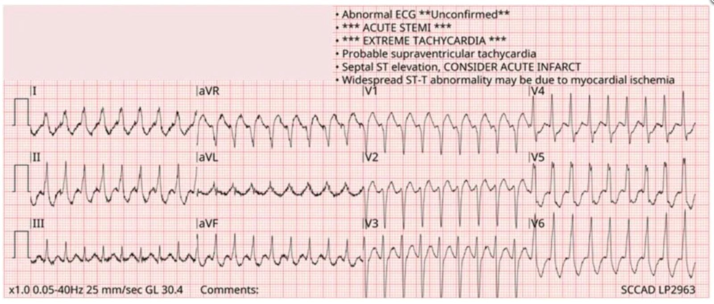
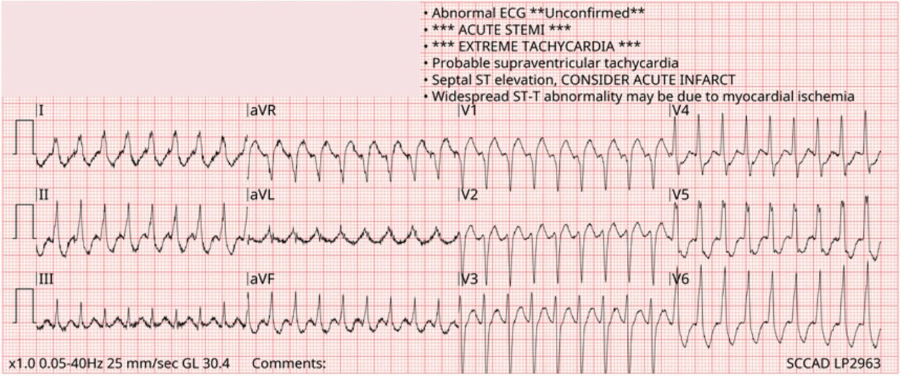
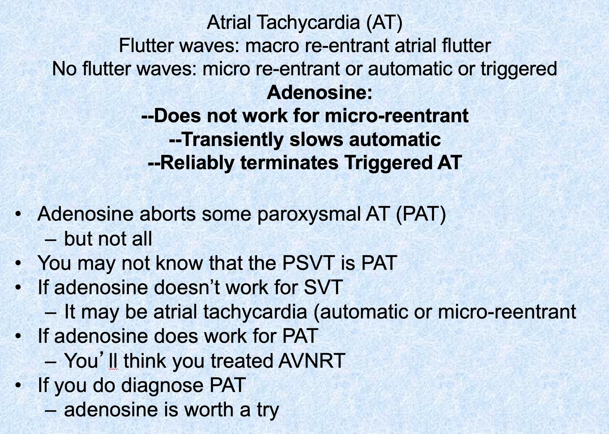
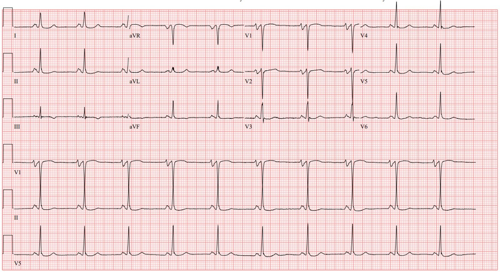
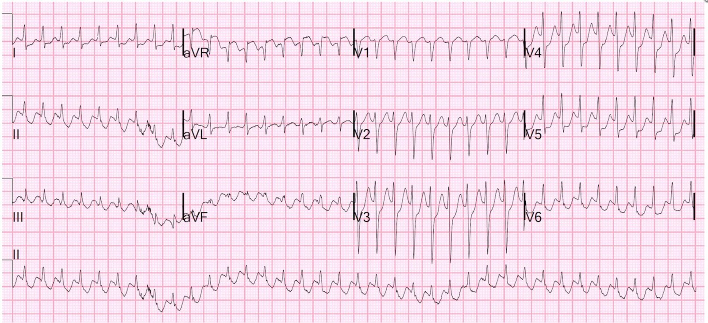
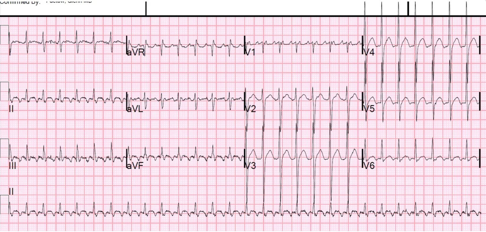
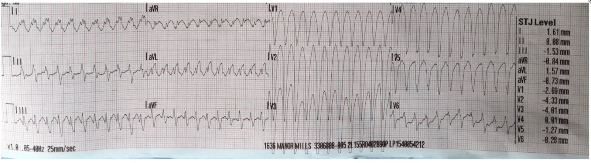
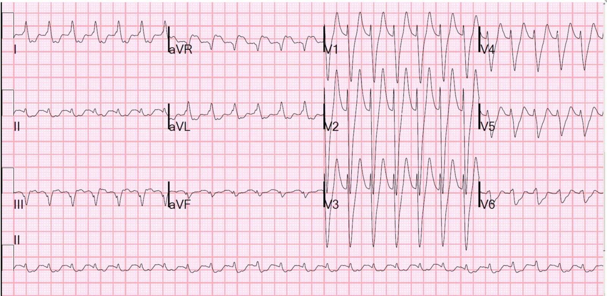

26/09/2025 — SVT tần số nhanh, chẩn đoán là gì?
Bản dịch tiếng Việt của bài "Rapid SVT, diagnosis?" – Dr. Smith’s ECG Blog. Giữ nguyên toàn bộ 8 hình ảnh của bản gốc.


Một người đàn ông 53 tuổi có tiền sử rung nhĩ kịch phát và đa u tủy xương gọi đội cấp cứu ngoài viện (EMS) vì khó chịu ở ngực và hồi hộp đánh trống ngực. Khi nhân viên cấp cứu ngoài viện đến nơi, họ thấy bệnh nhân tỉnh táo, tiếp xúc tốt và bệnh nhân nói ngực mình cảm thấy “không ổn”. Điện tâm đồ 12 chuyển đạo được trình bày dưới đây.


Bạn nghĩ gì?
Khi bệnh nhân có nhịp nhanh không ổn định huyết động, sốc điện chuyển nhịp luôn là lựa chọn hợp lý. Báo cáo của EMS ghi nhận huyết áp 144/59 mmHg, tần số thở 16, độ bão hòa oxy 99% khi thở khí trời. Vì vậy không cần sốc điện chuyển nhịp ngay lập tức.
Chẩn đoán phân biệt của chúng ta là gì? Tần số rất nhanh (~212 nhịp/phút) buộc chúng ta phải nghĩ đến nhịp nhanh thất. Tuy nhiên, thời gian QRS không thật sự rộng, dưới 100 ms. Do đó, nhịp nhanh trên thất có khả năng cao hơn nhiều.
Smith: khi tần số rất nhanh, bạn luôn phải CHẮC CHẮN rằng nhịp đều. Rung nhĩ rất nhanh, vốn luôn không đều hoàn toàn, thoạt nhìn có thể trông như đều. Nhịp này đúng là đều.
Ngoài ra, khoảng RR khá đều. Chẩn đoán phân biệt của SVT đều gồm:
- Nhịp nhanh xoang
- Nhịp nhanh vào lại nút nhĩ thất (AVNRT)
- Nhịp nhanh vào lại nhĩ thất (AVRT)
- Nhịp nhanh nhĩ (AT)
- Cuồng nhĩ (AFL)
- Nhịp nhanh bộ nối (JT – hiếm gặp, tôi sẽ không bàn đến trong bài này)
Nhịp nhanh xoang có lẽ là thứ quan trọng nhất cần nhận ra, vì nhịp nhanh xoang là sinh lý và không nên điều trị bằng thuốc làm chậm tần số. Hãy hình dung một bệnh nhân bị thuyên tắc phổi diện rộng kèm nhịp nhanh xoang bù trừ mà tần số tim lại bị làm chậm bằng thuốc chẹn beta. Bệnh nhân rất dễ tử vong.
Khi đã loại trừ nhịp nhanh xoang, hãy xem xét các công cụ chúng ta có trong tay và tác động mong đợi của chúng: nghiệm pháp cường phế vị, adenosine và thuốc ức chế nút AV – chủ yếu là thuốc chẹn kênh calci (CCB) và thuốc chẹn beta (BB).
Nghiệm pháp cường phế vị
Thử nghiệm ngẫu nhiên REVERT cho chúng ta biết rằng nghiệm pháp cường phế vị cải biên làm tăng khả năng cắt cơn SVT thành công. Cách thực hiện: đặt bệnh nhân ở tư thế nửa nằm nửa ngồi, cho bệnh nhân rặn (ví dụ bằng cách thổi vào một bơm tiêm) trong 15 giây, sau đó đặt nằm ngửa và nâng hai chân lên 45° như mô tả trong video này.
Khi nghiệm pháp này cắt được cơn SVT, nó làm vậy bằng cách ức chế dẫn truyền qua nút AV nhờ tăng trương lực phế vị. Do đó, nó có nhiều khả năng cắt được các nhịp nhanh có nút AV tham gia vào vòng vào lại. Đó là những nhịp nào? AVNRT và AVRT. Ức chế thoáng qua nút AV sẽ tác động gì đến AT hay AFL? Không gì cả. (Ngoại trừ có thể làm chậm thoáng qua tần số thất.)
CCB/BB
Cũng như nghiệm pháp cường phế vị, các thuốc này tác dụng bằng cách ức chế dẫn truyền qua nút AV. Vì thế chúng thường có thể cắt được AVNRT và AVRT.
Nhưng ngoài ra, chúng còn có thể ức chế tính tự động! Vì lý do này, chúng thường làm chậm hoặc cắt được AT (nếu AT do tính tự động). Chúng có thể làm giảm tần số dẫn truyền xuống thất trong cuồng nhĩ, nhưng cuồng nhĩ nổi tiếng là khó kiểm soát tần số, và do đó CCB/BB có thể hoàn toàn không có tác dụng gì với AFL.
Adenosine
Cũng như nghiệm pháp cường phế vị và CCB/BB, adenosine chặn thoáng qua toàn bộ dẫn truyền qua nút AV. Nó là “blốc tim hoàn toàn đóng chai”. May mắn là tác dụng chỉ kéo dài vài giây. Nó sẽ tác động thế nào đến từng loại nhịp nhanh?
AVNRT/AVRT: Thường cắt được cơn
AFL: Không tác động lên vòng cuồng nhĩ, nhưng ức chế tạm thời dẫn truyền AV, làm chậm tần số thất đủ lâu để bộc lộ rõ các sóng cuồng nhĩ nền. Vì vậy, dù không hữu ích về mặt điều trị, nó vẫn có thể hữu ích về mặt chẩn đoán nếu nhịp chưa rõ.
AT: Phức tạp! Điều này phụ thuộc vào cơ chế rối loạn nhịp và việc bàn luận chi tiết nằm ngoài phạm vi bài này. Tôi xin tóm tắt rằng phần lớn các nhịp nhanh nhĩ không bị cắt bởi adenosine. Xem thêm tại đây.
Smith: đây là slide của tôi về nhịp nhanh nhĩ:


Tóm lại
Nghiệm pháp cường phế vị, adenosine và CCB/BB hầu như không bao giờ làm SVT nặng thêm, nhưng có thể không có tác dụng. Vậy mỗi biện pháp có bất lợi gì? Với nghiệm pháp cường phế vị, hầu như không có bất lợi nào. Bất lợi của adenosine chủ yếu là khiến bệnh nhân cảm thấy rất khó chịu. Biến cố bất lợi nghiêm trọng thì khá hiếm. Bất lợi của CCB/BB là có thể không cắt được nhịp và bạn có thể bị mắc kẹt với tình trạng hạ huyết áp do một thuốc có thời gian bán thải dài hơn (so với adenosine hết tác dụng trong vài giây).
Smith: phải HẾT SỨC thận trọng với CCB nếu phân suất tống máu thấp. Dùng điện được ưu tiên hơn nhiều, và nếu tái phát, hãy thử amiodarone.
Điều này được tóm tắt trong bảng dưới đây:

Quay lại ca bệnh
Bệnh nhân này đã được dùng vài liều adenosine. Chúng tôi không có bản ghi nào, nhưng hồ sơ ghi nhận rằng adenosine đã cắt nhịp trong thời gian ngắn trước khi nhịp tái khởi phát. Đây là một diễn biến đáng ngờ, và nhiều khả năng đơn giản đây không phải là một nhịp bị cắt bởi adenosine. Trong trường hợp bệnh nhân này, rà soát thuốc đang dùng cho thấy ông đang dùng flecainide, một thông tin then chốt.
Flecainide thường được dùng để kiểm soát nhịp trong rung nhĩ, và nó tác dụng một phần bằng cách làm chậm dẫn truyền trong tim. Một nguy cơ đã biết của flecainide là khả năng gây cuồng nhĩ dẫn truyền 1:1. Tại sao vậy?
Tần số (nhĩ) điển hình của cuồng nhĩ là 300 nhịp/phút. Nhờ khả năng bảo vệ của nút AV, tần số thất nhanh nhất thường gặp là với dẫn truyền 2:1, tức 300/2 = 150 nhịp/phút. Nhưng vì flecainide làm chậm dẫn truyền, tần số nhĩ có thể giảm xuống thấp hơn một chút, ví dụ còn 240 nhịp/phút. Đây có thể là tần số mà nút AV thực sự có thể đáp ứng dẫn truyền 1:1. Vì vậy, dù tần số nhĩ thực ra chậm hơn, điều này lại nghịch lý tạo ra dẫn truyền xuống thất nhanh đến mức nguy hiểm.
Vì lý do này, bất kỳ bệnh nhân nào đang dùng thuốc nhóm 1C (flecainide hoặc propafenone) LUÔN LUÔN phải dùng kèm một thuốc ức chế nút AV để giảm khả năng xảy ra cuồng nhĩ 1:1.
Kết luận ca bệnh:
Khi đến khoa cấp cứu, bệnh nhân được sốc điện chuyển nhịp đồng bộ và trở về nhịp xoang bình thường. Flecainide được ngưng cho thải hết khỏi cơ thể, bệnh nhân được bắt đầu dùng amiodarone để kiểm soát nhịp và được chuyển đi triệt đốt ngoại trú.
Điện tâm đồ nhịp xoang được trình bày dưới đây:


Lưu ý rằng QRS trên điện tâm đồ cuồng nhĩ hơi giãn rộng với trát đậm ở nhánh lên so với điện tâm đồ nhịp xoang. Đó là do một đặc tính của flecainide gọi là “phụ thuộc tần số sử dụng” (use dependence), trong đó tác dụng của thuốc rõ rệt hơn ở tần số tim cao hơn.
Những điểm cần học:
- Với SVT không ổn định huyết động, hãy sốc điện chuyển nhịp
- Với SVT ổn định huyết động, luôn hợp lý khi bắt đầu bằng nghiệm pháp cường phế vị cải biên
- Lựa chọn adenosine hay CCB/BB tùy theo quyết định của bác sĩ điều trị, nhưng tôi ưu tiên adenosine vì thời gian tác dụng ngắn
- Flecainide có thể tạo thuận lợi cho cuồng nhĩ dẫn truyền 1:1
Smith: Thêm những ca liên quan tuyệt vời:
Hãy xem ca RẤT bổ ích này về cuồng nhĩ dẫn truyền 1:1 đã tự “chuyển nhịp” (Không phải vậy!!): Narrow Complex Tachycardia at a Rate of 220 (Nhịp nhanh QRS hẹp với tần số 220).


What happens when you give adenosine to a patient with this rhythm? (Điều gì xảy ra khi bạn cho adenosine ở bệnh nhân có nhịp này?)


Wide complex tachycardia at a rate of 270 (Nhịp nhanh QRS rộng với tần số 270)


Several Wide Complex Rhythms in One Patient. Test yourself: Will You See What I Did Not See? (Nhiều nhịp QRS rộng trên cùng một bệnh nhân. Tự kiểm tra: Bạn có thấy điều tôi đã không thấy?)


And more cases of flecainide and atrial flutter (Và thêm các ca về flecainide và cuồng nhĩ).
= = =
======================================
BÌNH LUẬN CỦA TÔI, bởi KEN GRAUER, MD (26/9/2025):
Ca hôm nay của BS. Frick ôn lại chẩn đoán phân biệt của một nhịp SVT (nhịp nhanh trên thất) đều mà không thấy rõ dấu hiệu hoạt động nhĩ. Tôi xin bổ sung những suy nghĩ sau vào phần ôn tập của BS. Frick.
- Chú ý đến tần số thất có thể vô cùng hữu ích khi xem xét lần lượt các khả năng chẩn đoán cho một nhịp SVT đều mà BS. Frick đã nêu. Dù có ngoại lệ — nhịp nhanh xoang ở người lớn không gắng sức hiếm khi vượt quá ~170/phút. Do đó — tần số 212/phút của bản ghi ban đầu hôm nay khiến nhịp nhanh xoang rất khó xảy ra.
- Lưu ý: Mọi quy tắc đều không còn áp dụng ở trẻ em — trẻ có thể biểu hiện nhịp nhanh xoang với tần số vượt quá 200/phút.
- Tần số 212/phút trong bản ghi hôm nay cũng khiến cuồng nhĩ (AFlutter) “chưa điều trị“ rất khó xảy ra. Như BS. Frick đã nêu — tần số điển hình của sóng cuồng nhĩ ở người lớn là ~300/phút (với khoảng tần số cuồng nhĩ thường gặp từ ~250-350/phút). Vì vậy — tôi lập tức loại cuồng nhĩ “chưa điều trị” khỏi chẩn đoán phân biệt của mình, vì 212/phút là quá nhanh đối với cuồng nhĩ dẫn truyền AV 2:1 — và quá chậm đối với dẫn truyền AV 1:1 NẾU cuồng nhĩ “chưa điều trị”.
- Mọi quy tắc đều không còn áp dụng với cuồng nhĩ “đã điều trị”. Điều này làm nổi bật điểm MẤU CHỐT rằng độ chính xác của chẩn đoán phân biệt phụ thuộc vào việc biết LIỆU bệnh nhân trước mặt có đang dùng thuốc chống loạn nhịp nào không. Ý thức được điều này lẽ ra đã phải thúc đẩy việc hỏi về bất kỳ thuốc làm chậm tần số nào mà bệnh nhân hôm nay có thể đang dùng.
- Chúng ta nên nghi ngờ rằng bệnh nhân hôm nay thật sự có thể đang dùng một thuốc chống loạn nhịp nào đó, xét theo tiền sử rung nhĩ kịch phát (PAF) — khi nhận thấy ông hiện đến khám với một nhịp SVT đều, dù có tiền sử rung nhĩ.
- Theo kinh nghiệm của tôi — việc ghi bản in giấy trong khoảng 60-90 giây mà adenosine còn tác dụng thường xuyên không được thực hiện. Theo ý kiến của tôi — điều này làm mất đi lợi ích chẩn đoán của loại thuốc tuyệt vời này. Adenosine hầu như luôn hiệu quả với các nhịp SVT vào lại ( = AVNRT; AVRT) — nhưng với các nguyên nhân SVT khác, việc giảm tần số thoáng qua do adenosine thường bộc lộ cơ chế nền của rối loạn nhịp, dù có thể không phục hồi được nhịp xoang. Tác dụng diễn ra nhanh và dễ bị bỏ lỡ trừ khi bạn ghi bản in giấy kéo dài 60-90 giây trong giai đoạn adenosine tác dụng tối đa. Bản in giấy cho phép bạn quay lại nghiên cứu bản ghi — trong đó bạn hầu như luôn tìm thấy manh mối về cơ chế thật sự của rối loạn nhịp.
- Cuồng nhĩ 1:1 ở tần số 212/phút là một kết luận hoàn toàn hợp lý cho ca thú vị hôm nay. Nhưng một bức hình đáng giá 1.000 lời nói — vì vậy bằng chứng về cuồng nhĩ 1:1 rất có thể đã được bộc lộ nhưng bị mất trong những bản ghi mà tiếc là chúng ta không có.